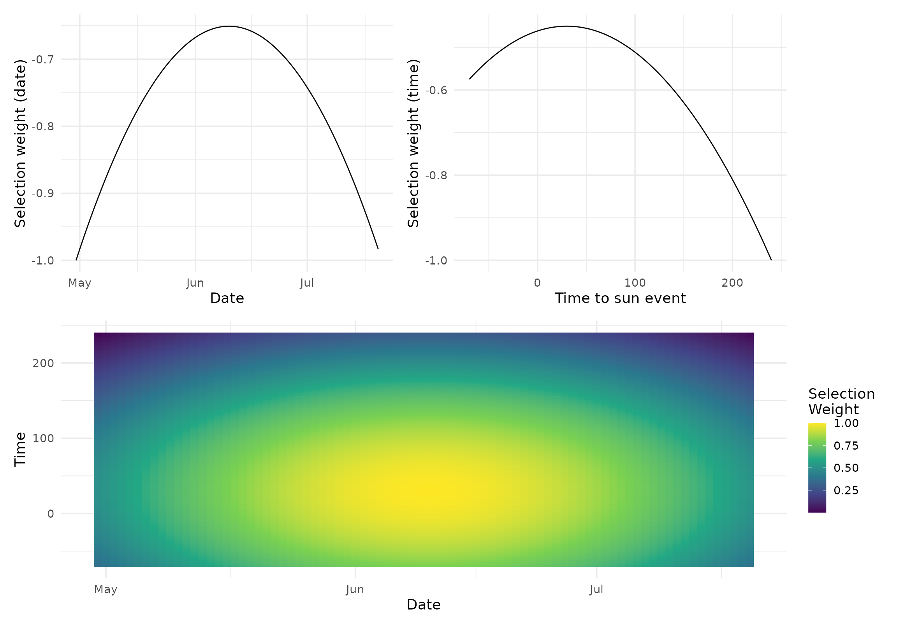
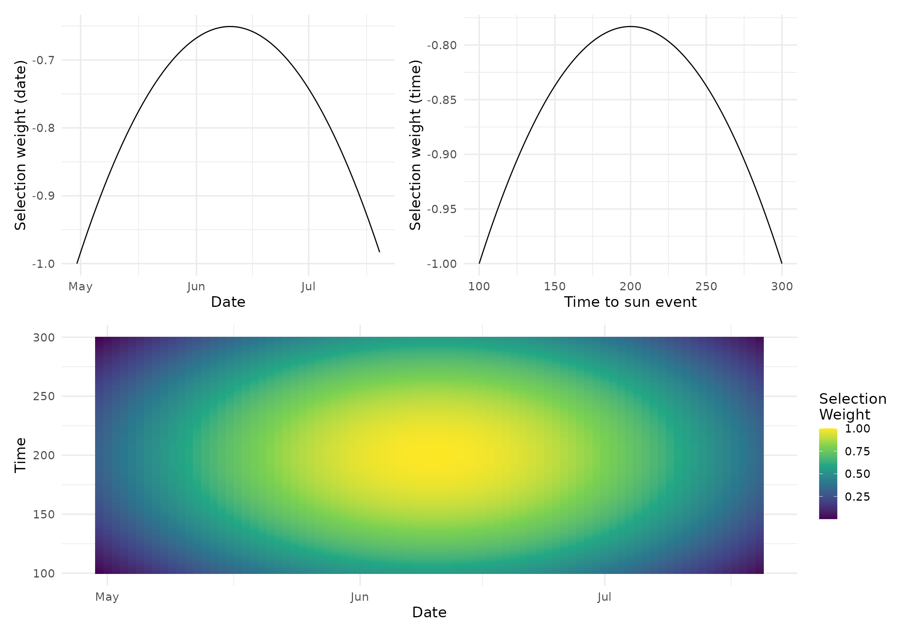

This brief vignette shows an example of a basic workflow selecting recordings for different times of day by site and year.
First we’ll load the packages we want to work with
Next we’ll prepare our metadata on the recordings, by cleaning, adding site-level information and calculating the time to sunrise/sunset for each file. We’ll also define recordings as either ‘early’ (occurring before 6am) or ‘late’ (occurring after 6am).
s <- clean_site_index(example_sites_clean,
name_date = c("date_time_start", "date_time_end"))
m <- clean_metadata(project_files = example_files) |>
add_sites(s) |>
calc_sun() |>
mutate(time_period = if_else(hour(date_time) < 6, "early", "late"),
year = year(date))
#> Extracting ARU info...
#> Extracting Dates and Times...
#> Joining by columns `date_time_start` and `date_time_end`
m
#> # A tibble: 42 × 15
#> file_name type path aru_type aru_id site_id date_time date
#> <chr> <chr> <chr> <chr> <chr> <chr> <dttm> <date>
#> 1 P01_1_202… wav a_BA… BarLT BARLT… P01_1 2020-05-02 05:00:00 2020-05-02
#> 2 P01_1_202… wav a_BA… BarLT BARLT… P01_1 2020-05-03 05:20:00 2020-05-03
#> 3 P02_1_202… wav a_S4… SongMet… S4A01… P02_1 2020-05-04 05:25:00 2020-05-04
#> 4 P02_1_202… wav a_S4… SongMet… S4A01… P02_1 2020-05-05 07:30:00 2020-05-05
#> 5 P03_1_202… wav a_BA… BarLT BARLT… P03_1 2020-05-06 10:00:00 2020-05-06
#> 6 P04_1_202… wav a_BA… BarLT BARLT… P04_1 2020-05-06 05:00:00 2020-05-06
#> 7 P04_1_202… wav a_BA… BarLT BARLT… P04_1 2020-05-07 03:25:00 2020-05-07
#> 8 P05_1_202… wav a_BA… BarLT BARLT… P05_1 2020-05-07 05:00:00 2020-05-07
#> 9 P06_1_202… wav a_BA… BarLT BARLT… P06_1 2020-05-09 05:20:00 2020-05-09
#> 10 P07_1_202… wav a_S4… SongMet… S4A01… P07_1 2020-05-09 05:25:00 2020-05-09
#> # ℹ 32 more rows
#> # ℹ 7 more variables: longitude <dbl>, latitude <dbl>, tz <chr>, t2sr <dbl>,
#> # t2ss <dbl>, time_period <chr>, year <dbl>Time to do some sampling!
First we define the selection parameters for each time frame we’re interested in sampling. This might be “dawn” and “dusk”, or in this example, “early” and “late” morning.
This function will also simulate the selection weights so we can see what we’ve defined.
p <- list("early" = sim_selection_weights(min_range = c(-70, 240)),
"late" = sim_selection_weights(min_range = c(100, 300), min_mean = 200))
p
#> $early
#> $early$min_range
#> [1] -70 240
#>
#> $early$min_mean
#> [1] 30
#>
#> $early$min_sd
#> [1] 60
#>
#> $early$day_range
#> [1] 120 201
#>
#> $early$day_mean
#> [1] 161
#>
#> $early$day_sd
#> [1] 20
#>
#> $early$offset
#> [1] 0
#>
#> $early$return_log
#> [1] TRUE
#>
#> $early$selection_fun
#> [1] "norm"
#>
#>
#> $late
#> $late$min_range
#> [1] 100 300
#>
#> $late$min_mean
#> [1] 200
#>
#> $late$min_sd
#> [1] 60
#>
#> $late$day_range
#> [1] 120 201
#>
#> $late$day_mean
#> [1] 161
#>
#> $late$day_sd
#> [1] 20
#>
#> $late$offset
#> [1] 0
#>
#> $late$return_log
#> [1] TRUE
#>
#> $late$selection_fun
#> [1] "norm"Now we can calculate selection weights
Here we’ll calculate a separate set of selection weights for early and late recordings in each year. Then we’ll group recordings by site, year, and time period.
w <- m |>
nest(data = c(-time_period, -year)) |>
mutate(params = p,
sel = map2(data, params, calc_selection_weights)) |>
unnest(sel) |>
select(-"data", -"params") |>
mutate(selection_group = glue("{site_id}_{year}_{time_period}"))
w
#> # A tibble: 21 × 24
#> time_period year file_name type path aru_type aru_id site_id
#> <chr> <dbl> <chr> <chr> <chr> <chr> <chr> <chr>
#> 1 early 2020 P01_1_20200503T052000_… wav a_BA… BarLT BARLT… P01_1
#> 2 early 2020 P02_1_20200504T052500_… wav a_S4… SongMet… S4A01… P02_1
#> 3 early 2020 P06_1_20200509T052000_… wav a_BA… BarLT BARLT… P06_1
#> 4 early 2020 P07_1_20200509T052500_… wav a_S4… SongMet… S4A01… P07_1
#> 5 early 2020 P09_1_20200511T050000_… wav a_S4… SongMet… S4A02… P09_1
#> 6 early 2020 P01_1_20200503T052000_… wav j_BA… BarLT BARLT… P01_1
#> 7 early 2020 P02_1_20200504T052500_… wav j_S4… SongMet… S4A01… P02_1
#> 8 early 2020 P06_1_20200509T052000_… wav j_BA… BarLT BARLT… P06_1
#> 9 early 2020 P07_1_20200509T052500_… wav j_S4… SongMet… S4A01… P07_1
#> 10 early 2020 P09_1_20200511T050000_… wav j_S4… SongMet… S4A02… P09_1
#> # ℹ 11 more rows
#> # ℹ 16 more variables: date_time <dttm>, date <date>, longitude <dbl>,
#> # latitude <dbl>, tz <chr>, t2sr <dbl>, t2ss <dbl>, doy <dbl>, psel_by <chr>,
#> # psel_min <dbl>, psel_doy <dbl>, psel <dbl>, psel_scaled <dbl>,
#> # psel_std <dbl>, psel_normalized <dbl>, selection_group <glue>This w data sets contains the original sampling
recordings, but now also new columns containing various measures of the
probability of selection.
We’ll define the number of samples we’d like to have.
n <- w |>
summarize(n_recordings = n(), .by = c("selection_group", "time_period")) |>
mutate(n = if_else(time_period == "early", 5, 2),
n_os = if_else(time_period == "early", floor(n * 1/3), floor(n * 1/4)),
n_os = pmax(0, pmin(n_recordings - n, round(n/3))),
n = pmin(n, n_recordings))
n
#> # A tibble: 7 × 5
#> selection_group time_period n_recordings n n_os
#> <glue> <chr> <int> <dbl> <dbl>
#> 1 P01_1_2020_early early 3 3 0
#> 2 P02_1_2020_early early 3 3 0
#> 3 P06_1_2020_early early 3 3 0
#> 4 P07_1_2020_early early 3 3 0
#> 5 P09_1_2020_early early 3 3 0
#> 6 P03_1_2020_late late 3 2 1
#> 7 P08_1_2020_late late 3 2 1And finally sample the recordings!
g <- sample_recordings(w, n,
col_site_id = selection_group,
col_sel_weights = psel_normalized)
g
#> Summary of Site Counts:
#>
#> siteuse by total:
#> Base Over
#> total 19 2
#>
#> siteuse by stratum:
#> Base Over
#> P01_1_2020_early 3 0
#> P02_1_2020_early 3 0
#> P03_1_2020_late 2 1
#> P06_1_2020_early 3 0
#> P07_1_2020_early 3 0
#> P08_1_2020_late 2 1
#> P09_1_2020_early 3 0The recordings selected for sampling…
g$sites_base
#> Simple feature collection with 19 features and 32 fields
#> Geometry type: POINT
#> Dimension: XY
#> Bounding box: xmin: 124 ymin: -53.21667 xmax: 132 ymax: 238.3167
#> Projected CRS: WGS 84 / World Mercator
#> First 10 features:
#> siteID siteuse replsite lon_WGS84 lat_WGS84 stratum wgt ip
#> 1 sample-01 Base None 0.001113911 -4.812753e-04 P01_1_2020_early 1 1
#> 2 sample-02 Base None 0.001113911 -4.812753e-04 P01_1_2020_early 1 1
#> 3 sample-03 Base None 0.001113911 -4.812753e-04 P01_1_2020_early 1 1
#> 4 sample-04 Base None 0.001122894 -4.273146e-04 P02_1_2020_early 1 1
#> 5 sample-05 Base None 0.001122894 -4.273146e-04 P02_1_2020_early 1 1
#> 6 sample-06 Base None 0.001122894 -4.273146e-04 P02_1_2020_early 1 1
#> 7 sample-07 Base None 0.001167810 3.240657e-05 P06_1_2020_early 1 1
#> 8 sample-08 Base None 0.001167810 3.240657e-05 P06_1_2020_early 1 1
#> 9 sample-09 Base None 0.001167810 3.240657e-05 P06_1_2020_early 1 1
#> 10 sample-10 Base None 0.001167810 -3.701886e-04 P07_1_2020_early 1 1
#> caty aux time_period year file_name type
#> 1 None 0.001 early 2020 P01_1_20200503T052000_ARU.wav wav
#> 2 None 0.001 early 2020 P01_1_20200503T052000_ARU.wav wav
#> 3 None 0.001 early 2020 P01_1_20200503T052000_ARU.wav wav
#> 4 None 0.001 early 2020 P02_1_20200504T052500_ARU.wav wav
#> 5 None 0.001 early 2020 P02_1_20200504T052500_ARU.wav wav
#> 6 None 0.001 early 2020 P02_1_20200504T052500_ARU.wav wav
#> 7 None 0.001 early 2020 P06_1_20200509T052000_ARU.wav wav
#> 8 None 0.001 early 2020 P06_1_20200509T052000_ARU.wav wav
#> 9 None 0.001 early 2020 P06_1_20200509T052000_ARU.wav wav
#> 10 None 0.001 early 2020 P07_1_20200509T052500_ARU.wav wav
#> path aru_type aru_id
#> 1 a_BARLT10962_P01_1/P01_1_20200503T052000_ARU.wav BarLT BARLT10962
#> 2 j_BARLT10962_P01_1/P01_1_20200503T052000_ARU.wav BarLT BARLT10962
#> 3 o_BARLT10962_P01_1/P01_1_20200503T052000_ARU.wav BarLT BARLT10962
#> 4 a_S4A01234_P02_1/P02_1_20200504T052500_ARU.wav SongMeter S4A01234
#> 5 j_S4A01234_P02_1/P02_1_20200504T052500_ARU.wav SongMeter S4A01234
#> 6 o_S4A01234_P02_1/P02_1_20200504T052500_ARU.wav SongMeter S4A01234
#> 7 a_BARLT10962_P06_1/P06_1_20200509T052000_ARU.wav BarLT BARLT10962
#> 8 j_BARLT10962_P06_1/P06_1_20200509T052000_ARU.wav BarLT BARLT10962
#> 9 o_BARLT10962_P06_1/P06_1_20200509T052000_ARU.wav BarLT BARLT10962
#> 10 a_S4A01234_P07_1/P07_1_20200509T052500_ARU.wav SongMeter S4A01234
#> site_id date_time date longitude latitude tz
#> 1 P01_1 2020-05-03 05:20:00 2020-05-03 -85.03 50.01 America/Toronto
#> 2 P01_1 2020-05-03 05:20:00 2020-05-03 -85.03 50.01 America/Toronto
#> 3 P01_1 2020-05-03 05:20:00 2020-05-03 -85.03 50.01 America/Toronto
#> 4 P02_1 2020-05-04 05:25:00 2020-05-04 -87.45 52.68 America/Toronto
#> 5 P02_1 2020-05-04 05:25:00 2020-05-04 -87.45 52.68 America/Toronto
#> 6 P02_1 2020-05-04 05:25:00 2020-05-04 -87.45 52.68 America/Toronto
#> 7 P06_1 2020-05-09 05:20:00 2020-05-09 -90.08 52.00 America/Winnipeg
#> 8 P06_1 2020-05-09 05:20:00 2020-05-09 -90.08 52.00 America/Winnipeg
#> 9 P06_1 2020-05-09 05:20:00 2020-05-09 -90.08 52.00 America/Winnipeg
#> 10 P07_1 2020-05-09 05:25:00 2020-05-09 -86.03 50.45 America/Toronto
#> t2ss psel_by psel_min psel_doy psel psel_scaled psel_std
#> 1 498.4167 t2sr -0.5359972 -0.9351720 0.2296568 0.8502302 1
#> 2 498.4167 t2sr -0.5359972 -0.9351720 0.2296568 0.8502302 1
#> 3 498.4167 t2sr -0.5359972 -0.9351720 0.2296568 0.8502302 1
#> 4 483.4167 t2sr -0.5240265 -0.9200039 0.2359748 0.8736204 1
#> 5 483.4167 t2sr -0.5240265 -0.9200039 0.2359748 0.8736204 1
#> 6 483.4167 t2sr -0.5240265 -0.9200039 0.2359748 0.8736204 1
#> 7 521.9333 t2sr -0.4585242 -0.8503970 0.2701113 1.0000000 1
#> 8 521.9333 t2sr -0.4585242 -0.8503970 0.2701113 1.0000000 1
#> 9 521.9333 t2sr -0.4585242 -0.8503970 0.2701113 1.0000000 1
#> 10 488.7500 t2sr -0.5129536 -0.8503970 0.2558023 0.9470254 1
#> psel_normalized selection_group geometry
#> 1 0.001 P01_1_2020_early POINT (124 -53.21667)
#> 2 0.001 P01_1_2020_early POINT (124 -53.21667)
#> 3 0.001 P01_1_2020_early POINT (124 -53.21667)
#> 4 0.001 P02_1_2020_early POINT (125 -47.25)
#> 5 0.001 P02_1_2020_early POINT (125 -47.25)
#> 6 0.001 P02_1_2020_early POINT (125 -47.25)
#> 7 0.001 P06_1_2020_early POINT (130 3.583333)
#> 8 0.001 P06_1_2020_early POINT (130 3.583333)
#> 9 0.001 P06_1_2020_early POINT (130 3.583333)
#> 10 0.001 P07_1_2020_early POINT (130 -40.93333)